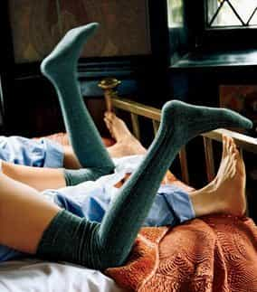
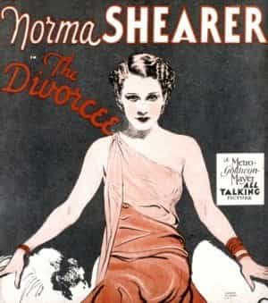

Michael is the author of Staying Married in a Degenerate Age. Follow him on Twitter or Facebook. You can read more of his writing at Honor and Daring.


Regular ROK readers are no doubt familiar with how the popular media pushes the message to women about how boring marriage and motherhood are, and how exciting it is to be slutting it up as a divorced single mom. Up until now, my circle of friends has remaind mostly unaffected by this corrosive message, but I can see the first signs of this plague spreading to people I know well.
My wife recently spent an afternoon with three of her girlfriends from college. When men get together, it is usually around a sports event. It rarely gets down to a personal level. But for women, an afternoon with the girls can mean that deep secrets come out, and in this case they did. My wife was shocked by what she learned and she shared the play by play with me when she arrived home.
Here’s the background story: My wife’s three friends are Hester Prynne, Gwyneth, and Sister Christian (names have been changed to protect the not-so-innocent). All the women have been married for a few years, and all of them have children. Everyone got married pretty early by today’s standards—all of them were hitched before they reached age 25. They live close by so I have met all of them and their spouses at the various kid parties and backyard barbeques that go along with matrimonial domesticity.
While my wife and Sister Christian still retain their girlish figures, the other women have completely let themselves go. I’ve seen both women take the “eat for two” adage literally, and balloon to Jabba the Hutt proportions during their pregnancies. Unfortunately, they were never able to lose the baby weight.

Don’t let this happen
Hester, one of the high BMI gals, monopolized the girly conversation by announcing she had a “secret boyfriend.” In between bites of strawberry cheesecake, she told the sordid tale of her intense attraction to what can only be described as a balding, overweight, married coworker who “shares her passions,” “understands her,” and is “completely attracted to her – cellulite and all.” As everyone knows, “real men” love curves.
Hester revealed that her gravitationally challenged knight is trapped in a loveless marriage (of course) to a woman who spends all his hard earned money. While the two have supposedly never engaged in sexual intercourse, they have on occasion shared a kiss and a grope on an empty elevator and had a brief but passionate make-out session in the supply closet.
Artist’s rendition of chubby knight
As Hester gleefully shared her adulterous encounters, the other “more to love” wife, Gwyneth, enthusiastically joined in on the husband bashing, confessing that she would never marry again knowing what she knew, and wished that she had spent more time dating different men and focusing more on her career.
Sister Christian was the most normal of the three women. Ironically, she is the only one whose husband is actually defective. He is a hypochondriac, a chronic complainer, and touchy prig. In other words, he is a massive pussy. He can’t handle any stress so he depends on his wife to do everything.
Because I know all the parties involved, I can draw a few lessons from these sad situations:
The husband of the woman who is cheating is a professional CrossFit trainer. He is handsome and keeps a low body fat percentage. He could be on the cover of Men’s Health. He should be able to run dread game on his wife. Of the two of them, the husband has a much higher sexual market value (SMV). She should be the one doing her best to keep him.
But the husband’s excellent fitness and good looks are not enough. The man she is cheating with is soft, overweight, and balding. In short, she is willing to trade her high SMV husband for the chance at a pounding (and that is the best she can expect) with a lower SMV male.
The husband of the other “healthy at any size” wife who regrets getting married too early is one of the most interesting people I’ve met. He’s an IT guy at a software company and a voracious reader. He can talk expertly about any number of subjects: literature, sports, movies, games, technology, business, and current events. He is also one of the strongest men I have ever met. I worked out with him and I’ve seen the incredible weight he can move at the gym. I’ve trained in martial arts since I was a kid and I still would not pick a fight with him.
Despite her husband being a renaissance man, his wife is bored with him. She wishes that she had the opportunity to ride the cock carousel for a while longer. It defies all reason.
With the exception of the whiney complainer guy, both men whose wives are unhappy with them are model fathers. I guess these women care more about possibility of excitement than they do about their children.
If their marriages break up, these women will be reduced to single mommery. It will make the lives of their children infinitely more difficult. The girls will start having sex sooner and will be more likely to choose poorly when it comes to a mate. The boys will be more likely to fall in with the wrong crowd and engage in crime. They will spend years seeking the father that they lost.
These women don’t seem to see the potential consequences of their actions.

How do I put this delicately? Gentlemen, you need to fuck your wives. If you are not having regular sex with your wife, you need to figure out what is going wrong and solve the problem, because there is definitely a problem there. The Hester situation is partially related to the fact that she is not seeing much action on the home front.
You can’t let your wife gain so much weight that she is sexually unappealing to you. If a woman regulates herself, pregnancy should not be a body-destroying activity. And don’t assume that a fat wife can’t find a suitor. There will always be some bottom feeder who is willing to hit it if you are not doing so.
If, on the other hand, the problem is that you have lost your libido, you need to take urgent measures to ensure that you get it back. This can usually be done through proper exercise and nutrition. The devil finds work for idle beavers.
Although all the women in the group are nominally Christian, Sister Christian is a hardcore, bible-reading, mega church-going believer. While the other women have exemplary husbands, Sister Christian’s husband is a weak man.
Even though her husband is a gamma male loser, Sister Christian believes in honoring her marriage vows because of her strong faith. She asked the other women to pray for her husband to start acting like a man. Sometimes life is not fair.
How long she can hold to her principles, I cannot say. Perhaps if Hester succeeds in destroying her marriage, the CrossFit trainer will end up with Sister Christian in the end.
I know I will be unpopular for saying this, but you can’t give your partner a long leash without courting trouble. Hester is constantly texting with her chubby paramour right under her husband’s nose. If he paid just a little bit of attention, he would catch it before he gets the full cuckold.
There needs to be accountability on both sides.

Divorced women spread the gospel of divorce to other women because misery loves company. Both Hester and Gwyneth have divorced coworkers who are trying to encourage them to leave their husbands in favor of the Sex and the City lifestyle.
If you find out that your wife is getting too close to a bitter divorcée hag, intervene before your wife’s mind is completely poisoned.

Despite this, I am still a big advocate of marriage—how else can we raise decent offspring? But in our degenerate age, the natural cultural protections that a husband could rely on are gone. The media openly encourages cuckoldry, promiscuity, single mommery, and divorce.
I am beginning to think that the only way to stay married now is want to constantly strive to be more alpha in every aspect of life. There is no rest for the man who is trying to swim against the current in the age of Mattress Girl and Caitlyn Jenner.
Read More: Housewives Are The New Battered Wives